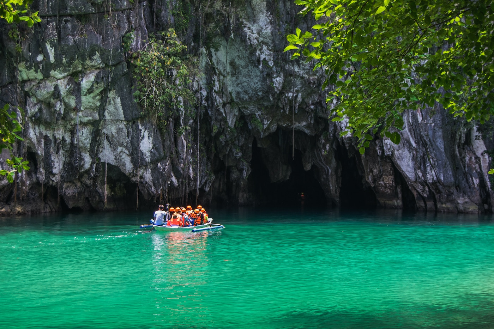

ABOUT PUERTO PRINCESA SUBTERRANEANRIVER NATIONAL PARK
Puerto-Princesa Subterranean River National Park encompasses
one of the world’s most impressive cave systems, featuring
spectacular limestone karst landscapes, pristine natural beauty,
and intact old-growth forests and distinctive wildlife. It is
located in the south-western part of the Philippine
Archipelago on the mid western coast of Palawan, approximately
76 km northwest of Puerto Princesa and 360 km southwest of
Manila.
The property, comprising an area of approximately 22,202 ha, contains an 8.2km long underground river.
The highlight of this subterranean river system is that it flows
directly into the sea, with its brackish lower half subjected to
tidal influence, distinguishing it as a significant natural global
phenomenon. The river’s cavern presents remarkable, eye catching
rock formations. The property contains a full mountain-to-sea e
cosystem which provides significant habitat for biodiversity
conservation and protects the most intact and noteworthy forests
within the Palawan biogeographic province. Holding the distinction
of being the first national park devolved and successfully managed
by a local government unit, the park’s effective management system
is a symbol of commitment by the Filipino people to the protection
and conservation of their natural heritage.